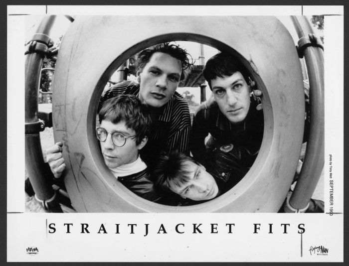
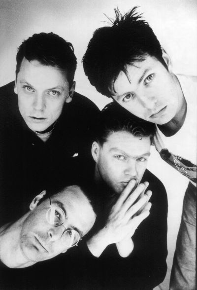

Straitjacket Fits
Featured Artist of the Month
Straitjacket Fits formed in 1986 in Dunedin, New Zealand and were one of the most accomplished of the 1980s Dunedin bands. The band’s first EP Life In One Chord was released in 1987 and it spent 10 weeks in the Top 50. After this, the band left Dunedin, moved to Christchurch briefly, and finally shifted to New Zealand’s main marketplace in Auckland where their first album Hail was released in 1988. The band’s first overseas venture was to Australia in 1989, and shortly after that was a tour of Europe.
In the 1990s, the band released their second album Melt, supported band My Bloody Valentine on tour in Australia, and supported The La’s on tour in the United States. Their third album, Blow was recorded in California and released in 1993. Following this album release was a US tour and an appearance on Late Night with Conan O’Brien. The bands eventually disbanded in 1994, but were inducted into the NZ Music Hall of Fame in 2008.